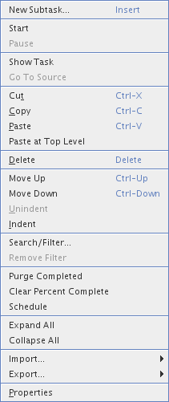
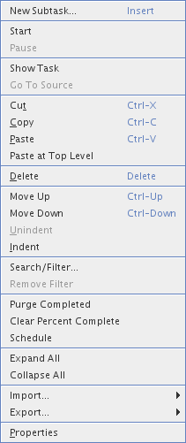

Toolbar
- New Subtask... (Insert) - Go To Source
- Go To Source - Search/Filter...
- Search/Filter...- Remove Filter
 - Start
- Start- Pause
 - Move Up
- Move Up- Move Down
Task's local menu

Task List's local menu

Toolbar- New Subtask... (Insert) - Go To Source - Search/Filter...- Remove Filter - Start- Pause - Move Up- Move Down |
Task's local menu |
Task List's local menu |
) )
marks the
task that you are currently working on. Started task will remain
started after a NetBeans restart. The owner of a started task will be
set to the name of the current user if it was empty.
))/Move
Down ())
)
marks the
task that you are currently working on. Started task will remain
started after a NetBeans restart. The owner of a started task will be
set to the name of the current user if it was empty.
))/Move
Down ())dev@tasklist.netbeans.org.
Further information at http://tasklist.netbeans.org.